Nova Shop
In the Nova Shop, you can find various items ranging from consumables to gears.
Players can obtain Nova Points by purchasing them on NovaRO's website, or by exchanging Gold Coins in the Main Office.
Packages


Hats
| Hats | ||||
|---|---|---|---|---|
| Image | Name | Price | Slot | Description |
 Capooring Hat Capooring Hat
|
5,000 | Upper | A little Poring and a Marin are comfortably seated atop a revolutionary Capoo catbus that runs on watermelons.
Class: Costume
| |
 Glutton Capoo [M] Glutton Capoo [M]
|
5,000 | Mid | There are few things Capoo wouldn't do for a yummy meal. One of them would be give up on chasing it! Rawr!
Class: Costume
| |
 Capoo Bag Capoo Bag
|
7,500 | Garment | There are few things Capoo wouldn't do for a yummy meal. One of them would be give up on chasing it! Rawr!
Class: Costume
| |
 Saiyan's Wrath [L] Saiyan's Wrath [L]
|
6,500 | Lower | You are charged! You are electrifying!
Class: Costume
| |
 Ultra Instinct Ultra Instinct
|
7,500 | Garment | An aura of pure, unabashed intensity. It is sure to intimidate your enemies.
Class: Costume
| |
| Brown Cat Bag | 7,500 | Garment | A spacious backpack with comfortable straps. Warm snuggles make this shy cat blush adorably.
Class: Costume
| |

|
Monado | 7,500 | Garment | A replica of the legendary sword created based on the Machina's research.
Class: Costume
|

|
Teddy Backpack | 7,500 | Garment | A teddy sewn together from fabric scraps and pieces of metal. Enjoys the leisurely convenience of being taken places.
Class: Costume
|
| .EXE Wing Cap | 5,000 | Upper | A creamsicle orange cap that will be noticed in a crowd.
| |
| .EXE Backpack | 7,500 | Garment | A creamsicle orange backpack that will be noticed in a crowd. Its simple design hides numerous compartments, including a special pocket for bubblegum.
Class: Costume
| |
 Blowing Scattered Sakura Blowing Scattered Sakura
|
7,500 | Garment | Gently Swirling cherry leaves invite a feeling of lazy afternoons spent in amatsu.
| |
| Ornate Scarf | 7,500 | Lower |
An adorned scarf fit for heroes.
| |
| Falling Maple Leaves | 7,500 | Garment | Fluttering and dancing maple leaves invite a feeling of autumn bliss.
Class: Costume
| |
 Snowflake Tiara Snowflake Tiara
|
5000 | Upper | Let it snow! Forged during a snowstorm, this permanently frozen and delicate tiara will keep your head cool.
Class: Costume
| |
| 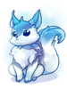 |  Snow Fox [M] Snow Fox [M]
|
5000 | Middle | A fluffy companion for your arctic adventures! Despite the cold blue color, the markings are surprisingly warm to the touch.
Class: Costume
|
| Cat Coffee Cup | 5,000 | Upper | A cup with a miniature-sized Calico. The steamy bath just about meets this kitty's standards.
Class: Costume
| |
| Fluffy Cat [L] | 5,000 | Lower |
An adorable fluffy cat.
| |
| Cat Backpack | 7,500 | Garment | A spacious backpack with comfortable straps. Warm snuggles make this shy cat blush adorably.
Class: Costume
| |
| Sailor Collar | 6,500 | Lower | A cute sailor uniform collar.
| |
| Crossed Swords | 7,500 | Garment | A set of swords that goes on your back.
| |
| 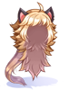 | Blond Eleanor Wig | 5,000 | Upper |
A wig that mimics the homunculus Eleanor's hairstyle in a bright golden color.
|

|
 White Cat [L] White Cat [L]
|
5,000 | Lower |
A white cat doll that looks and acts just like the real thing! Class: Costume
|
| 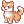 Shiba Inu [M] | 5,000 | Mid |
This playful Shiba Inu will accompany you on many journeys.
| |
| False Ears | 5,000 | Mid |
A pretty good gag costume, they make your ears look like they stick out further than they normally do. Maybe they'll help with your hearing too.
| |
| 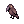 The Crow [M] | 5,000 | Mid |
A lone crow with a curious disposition; he seems as interested in you as the people and things around you.
| |
 Evil Marching Hat [1] Evil Marching Hat [1]
|
5,000 | Upper |
A dark marching hat worn by members of an undead band from Niffleheim.
| |
| Mercury Riser [1] | 5,000 | Upper |
ASPD +3%, CRIT +3
| |
| Tam [1] | 5,000 | Upper |
A large knitted hat that can be used to conceal long hair.
| |
| Demon Mask | 5,000 | Mid, Lower |
A mask worn by an ancient Rune Midgardian race that worshipped demons.
| |
| Hawk Eye | 5,000 | Mid |
This headgear makes you more sensitive and you could get high concentration.
| |
| 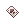 Poker Card | 5,000 | Lower |
Gives you a feeling of advantage over your enemies.
| |
| Eremes Scarf | 7,500 | Lower |
A bright red tattered scarf.
| |
| Ignis Cap [1] | 5,000 | Upper |
A mysterious hat from Captain Ignis
| |
| Desert Prince [1] | 5,000 | Upper |
This hat is coming from an old soldier who used to live in the desert.
| |
| Scratching Cat | 5,000 | Mid, Lower |
Class: Costume
| |
 Fox Ear Ribbons [1] Fox Ear Ribbons [1]
|
5,000 | Upper |
Cute ears made to resemble those of a fox.
Low chance of transforming into [ Moonlight Flower ] monster for 5 seconds while physically attacking. Transformation grants the following bonuses:
Class : Headgear
| |
| Sunglasses in Mouth | 5,000 | Lower |
So hot! +100 Cool
| |
| Helm of Darkness [1] | 5,000 | Upper, Mid |
A foreboding helmet that hides part of the face. People wearing this have the appearance of Beelzebub.
| |
| Pussy Cat Bell | 5,000 | Lower |
A bell which can be used as a necklace, and makes a clear sound when it rings.
| |
| 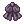 Pitch B. Ribbon [1] | 5,000 | Upper |
Dark neat black ribbon.
| |
| Wild Rose Hat [1] | 5,000 | Upper |
A hat which resembles the wild cat, Wild Rose.
| |
 Blush of Groom Blush of Groom
|
5,000 | Mid |
A blushing impression of a bridegroom.
| |
 Gentleman's Pipe Gentleman's Pipe
|
5,000 | Lower |
A long smoking pipe used by gentlemen and nobility.
| |

|
 Invisible Mantle Invisible Mantle
|
2,500 | Garment | (Invisible costume garment)
An invisible cape that makes your garment invisible. |
 Toupee Toupee
|
2,500 | Hat | (Invisible costume middle headgear)
Musty clump of synthetic hair, for those who have something to hide. | |

|
Contact Lenses | 2,500 | Mid |
(Invisible costume middle headgear)
|
 Retainer Retainer
|
2,500 | Lower |
(Invisible costume lower headgear)
| |
| Twin Bunnies [1] | 5,000 | Mid |
A pair of inseparable bunnies. It's rumored that they bring Good Fortune to their owner.
| |

|
Hockey Mask | 5,000 | Mid, Lower |
This mask calls the urge to hold a weapon in one's hand and hurt people on the 13th of every month.
|
| Jejecap | 5,000 | Upper |
A colorful headgear for JeJemon. It created a massive trend locally during 2010-2011 era.
| |

|
 Odin Mask Odin Mask
|
5,000 | Mid, Lower |
A mask once worn by Odin during a fierce battle between the gods and humans.
|
| Spiked Scarf | 5,000 | Lower |
Spiked Scarf
| |
| Anubis Helm | 5,000 | Upper, Mid |
This ceremonial headdress holds the likeness of Anubis, god of the underworld.
| |
 Crown of Deceit [1] Crown of Deceit [1]
|
5,000 | Upper, Mid |
A deceptive crown that was once used to summon monsters.
| |
| Yellow Ribbon | 5,000 | Upper |
It's a piece of ribbon that hangs to one side when worn that was created out of old Flags that was torn by bullets.
| |
| Fantastic Wig | 5,000 | Upper, Mid |
Wig with red, white and black colors.
| |
 Rideword Hat [1] Rideword Hat [1]
|
5,000 | Upper |
A hat designed to mimic the look of a terrible magic book which attacks people.
| |
| Benevolent Guardian [1] | 5,000 | Upper, Mid |
A headdress worn by high level members of warrior clergy members.
| |
| Dress Hat [1] | 5,000 | Upper |
A tiny and cute hat that can decorate a part of the head.
| |
| 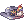 Hat Of Fortune [1] | 5,000 | Upper |
A hat that celebrates luck provided by the stars.
| |
| Dragon Helm [1] | 5,000 | Upper |
A headgear made by the hard scale of Dragon. The wearer of this headgear can get the great power of Dragon.
| |
 Koneko Hat Koneko Hat
|
5,000 | Upper |
A magical kitty hat which shows various expressions on its face.
| |
| Large Hibiscus [1] | 5,000 | Upper |
A large hibiscus flower decoration. These flowers can only be seen in Ayothaya.
| |
| Ifrit Mask | 5,000 | Upper, Mid, Lower |
A mask of Ifrit, the spiritual owner of fire.
| |
| Note Headphone [1] | 5,000 | Upper, Mid |
A cool looking set of headphones that have earmuffs designed to resemble music notes.
| |
 Ship Captain Hat [1] Ship Captain Hat [1]
|
5,000 | Upper |
Hat of a captain who sails the seven seas.
| |
 Wind's Guide [1] Wind's Guide [1]
|
5,000 | Upper |
A cap of post man who delivers letters with heart.
| |
 Wings of Victory Wings of Victory
|
5,000 | Upper, Mid |
This hair accessory is made of Valkyrie's jewel and feathers.
| |
| Ifrit's Ears | 5,000 | Mid |
A headgear which imitates Ifrit's ears, the spiritual owner of fire.
| |
 Robo Eye Robo Eye
|
5,000 | Mid |
A weird item that spreads a strange-shaped beam around the eyes. It seems to have been made in outer space.
| |
 Angel Spirit Angel Spirit
|
5,000 | Mid |
A golden mask rumored to be worn by some ancient Goddess.
| |
 Sigrun's Wings Sigrun's Wings
|
5,000 | Mid |
Ear adornments that symbolize rebirth. They have the ability to change its effects depending on the job of the wearer.
| |

|
 B. Frame Glasses B. Frame Glasses
|
5,000 | Mid |
Dark-colored plastic frame Locs.
|
| Reginrev's Wings | 5,000 | Mid |
A head accessory which is named after Valkyrie Reginleif. If someone wear this, they can get the bless of god.
| |
| Observer | 5,000 | Mid |
A device that can measure opponent's power. Commoners have power level 5. Heroes have a power level over 9,000!
| |
 Rainbow Scarf Rainbow Scarf
|
5,000 | Lower |
Rainbow Scarf
| |
 Gangster Scarf Gangster Scarf
|
5,000 | Lower |
A gangster's red scarf.
| |
| 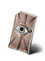 |  Spare Card Spare Card
|
5,000 | Lower |
This monster card has been rejected and deemed defective.
Only the highest quality cards are allowed to possess a monster's abilities.
Instead of letting it go to waste, the Kafra Staff has offered it as a decorative headgear.
|
| Ninja Scroll | 5,000 | Lower |
A scroll used by Ninjas to cast spells.
| |
 Well-Chewed Pencil Well-Chewed Pencil
|
5,000 | Lower |
A popular snack while taking tests. It makes one look more studious but, its days may be numbered if it stays in somebody's mouth any longer.
| |
| Brazilian Flag Hat [1] | 5,000 | Upper |
A hat made by flag of Brazil. A patriot wears it to express his country.
| |
 Sleeping Kitty Cat [1] Sleeping Kitty Cat [1]
|
5,000 | Upper |
A sleeping cat which rests on your head. If you wake him up, you will suffer.
| |
| 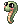 Snake Head [1] | 5,000 | Upper |
This cute animated Boa will keep you company as you meander around on your adventures.
| |
| Chick Hat | 5,000 | Upper |
A hat adorned with a cute chick that brings feelings of joy to those that see it hopping.
| |
 Pirate Dagger Pirate Dagger
|
5,000 | Lower |
A small silver knife that is held between your teeth to allow free use of your hands.
| |

|
CD In Mouth | 5,000 | Lower |
Burn away as you hold this CD in your mouth.
|
| Scarf | 5,000 | Upper |
This wonderful kerchief gives you an air of 'Je ne sais quoi'
| |

|
Vagabond Wolf [1] | 5,000 | Upper, Mid |
Can feel a high dignity of the Northern Wolf Tribe.
|
| Cow Hat [1] | 5,000 | Upper |
A hat which is modeled after a cow. There is rumor that if you put this on while you are sleeping, you could meet a benevolant godly cow.
| |
| Dolor Hat [1] | 5,000 | Upper |
A Dolor of Thanatos laying on your head. It's rumored that the doll is trying to speak with his owner.
| |

|
 Skull Cap [1] Skull Cap [1]
|
5,000 | Upper |
A driver's cap with a menacing skull on the band.
|
| Droopy Turtle Hat [1] | 5,000 | Upper |
A hat that curses nearby people to be lazy.
| |

|
 Ascendant Crown [1] Ascendant Crown [1]
|
3,750 | Upper |
[ Super Novice Only ]
If upgraded to +7 or higher, MHP + 1000, MSP + 100. If upgraded to +9 or higher, All Stats + 5. Class : Headgear
|

|
 Autumn Headband [1] Autumn Headband [1]
|
3,750 | Upper |
A hairband with an array of autumn leaves attached to it. It displays the beauty of an autumn forest for all to see. Increases [ Reduces damage done by [ If upgraded to +7 or higher, adds +5 ATK for every 5 points of base INT. If upgraded to +9 or higher, increases [ Class : Headgear
|

|
 Black Ribbon [1] Black Ribbon [1]
|
3,750 | Upper |
A simple black ribbon that promotes focus no matter how intense the battle is. Increases [ If upgraded to +7 or higher, adds +2 ATK for every 5 points of base AGI. If upgraded to +9 or higher, increases the damage done by [ Class : Headgear
|

|
 Divine Guard's Helm [1] Divine Guard's Helm [1]
|
3,750 | Upper |
A majestic hat that displays the divine authority that has been invested in the wearer. Reduce damage received by monsters of all sizes by 5%. If upgraded to +7 or higher, cast [ If upgraded to +9 or higher, Increase [ Class : Headgear
|

|
Focus Beret [1] | 3,750 | Upper |
A green beret that helps the user to refocus their energy into more meaningful attacks. The star on the front is inscribed with the character for 'Dragon'. When the [ If upgraded to +7 or higher, add a 3% chance when Physical attacking to obtain ASPD +2 for 5 seconds. If upgraded to +9 or higher, Increase [ Class : Headgear
|

|
 Harvester Hat [1] Harvester Hat [1]
|
3,750 | Upper |
A good-luck hat worn by farmers to make sure they collect an exceptionally good harvest. Some say it was blessed by the Harvest Goddess herself. Adds a chance to drop If upgraded to +7 or higher, adds a small chance to drop If upgraded to +9 or higher, increases the damage done by [ Class : Headgear
|

|
 Hitaikakushi [1] Hitaikakushi [1]
|
3,750 | Upper |
An otherwise normal ghost bandana with a red spiral insignia on the front. It demonstrates a strong connection between the wearer and the afterlife. Reduce Fixed Cast Time by 2%. Increases Critical Rate by 2 for every refine level. When being physically attacked, has a 5% chance to autocast the highest level learned [ When physically attacking, has a 5% chance to autocast the highest level learned [ If upgraded to +7 or higher, MATK + 20. If upgraded to +9 or higher, reduce Variable Cast Rate by 20%. Reduce [ Class: Headgear
|

|
 Inconspicuous Hat [1] Inconspicuous Hat [1]
|
3,750 | Upper |
A simple hat that would look inconspicuous in any crowd. It's very helpful to anyone who is trying to blend in. MATK + 7% Increases MATK by 50 if wearer's base INT is 120 or higher. If upgraded to +7 or higher, MATK + 2% for each level of [ Auto Shadow Spell ] learned, ASPD + 2. If upgraded to +9 or higher, MATK + 5% Class : Headgear
|

|
Lyrica Hat [1] | 3,750 | Upper |
A finely crafted hat designed just for Maestros. You can't see from the outside, but on the inside is written every song a Maestro needs to make it big! Reduces fixed casting time of all skills by 5% for each level of [ If upgraded to +7 or higher, increases [ If upgraded to +9 or higher, reduces the SP cost of [ Class : Headgear
|

|
 Oni Horns [1] Oni Horns [1]
|
3,750 | Upper |
Twisted horns that were supposedly crafted to look like those of a race of demons that died out long ago. Apparently placing them on your head can grant you a small amount of their power. Increase the damage of [ If upgraded to +7 or higher, ATK + 20, HIT + 5. If upgraded to +9, adds a 10% chance to autocast [ Class : Headgear
|

|
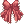 Shrine Maiden Ribbon [1] | 3,750 | Upper |
A ribbon once worn by a shrine maiden as she fought off hordes of demons and youkai. Wearing it demonstrates - and rewards - your resolve to follow the same path. Increases the damage of [ Increases the damage of [ If upgraded to +7, there is a 5% chance of autocasting the learned level of [ If upgraded to +9, reduces fixed cast time by 1% Class : Headgear
|
| 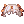 Magician's Night Cap [1] | 3,750 | Upper |
A hat that promotes a sophisticated yet sleepy look. It once belonged to an ancient magician who was well known for her vast knowledge and lazy behaviour, to the point she was nicknamed 'The Great Unmoving Library.' Adds 50% more damage to all Bolt skills. MDEF +10 If upgraded to +7 or higher, increases [ If upgraded to +9 or higher, ASPD +5. Class : Headgear
| |
 Ordinary Black Magician Hat [1] Ordinary Black Magician Hat [1]
|
3,750 | Upper |
Just an ordinary black magician's hat. For some reason, you feel somewhat extraordinary while wearing it. Increases
Magical attacks bypass the Defense of normal monsters by 10%. Each upgrade increases Magic Defense bypass by an additional 2%. If upgraded to +7 or higher, increases
If upgraded to +9 or higher, increases MATK by 5%. Class : Headgear
| |

|
 Night Sparrow Hat [1] Night Sparrow Hat [1]
|
3,750 | Upper |
A hat named after the mysterious bird that sings at night. Its song is used to cause night blindness to mask its true form in order to eat humans that stray too deep into the forest. Reduces fixed casting time of all skills by 5% for each level of [ If upgraded to +7 or higher, increases [ If upgraded to +9 or higher, reduces the SP cost of [ Class : Headgear
|
 Sea Captain Hat [1] Sea Captain Hat [1]
|
3,750 | Upper |
A crisp white hat most often used by the captains of large naval craft. It came to be seen as a sign of unwavering strength in the eyes of naval crews everywhere. Increase the damage of
[ 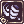 Axe Tornado ] and
[ If upgraded to +7 or higher, increases the damage of [ Axe Tornado ] by 1% for each level of
[ If upgraded to +9 or higher, increases the damage of [ Axe Tornado ] by 1% for each level of
[ Class : Headgear
| |


Equipment
| Gears | |||
|---|---|---|---|
| Image | Name | Price | Description |

|
 Knight's Shield [1] Knight's Shield [1]
|
5,000 |
Increases attack speed (reduces delay after attack by 10%).
|

|
 Mad Bunny [1] Mad Bunny [1]
|
5,000 | A rag doll that Piamette is using for both attack and defense? It looks so real and alive!
|

|
Amistr Bag | 7,500 | This backpack is made according to the shape of the famous Homunculus 'Amistr'.
|
 Doram Costume Doram Costume
|
10,000 | Account Bound
A cat costume.
You cannot attack or use ANY skills while wearing this costume.
| |
| Lucius's Fierce Armor of Volcano [1] | 4,000 | An armor that is enchanted with the Fire property.
Class: Armor
| |
| Saphien's Armor of Ocean [1] | 4,000 | An armor that is enchanted with the Water property.
Class: Armor
| |
| 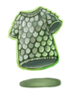 | Aebecee's Raging Typhoon Armor [1] | 4,000 | An armor that is enchanted with the Wind property.
Class: Armor
|
| Claytos Cracking Earth Armor [1] | 4,000 | An armor that is enchanted with the Earth property.
Class: Armor
| |
Consumable
| Consumable | |||
|---|---|---|---|
| Image | Name | Price | Description |
 All-in-One Booster 60m All-in-One Booster 60m
|
10000 | A fortified chest packed to the brim with all manner of consumables. Opening it imbues you with the following item effects:
| |

|
All-in-One Booster 30m | 5000 | A fortified chest packed to the brim with all manner of consumables. Opening it imbues you with the following item effects:
|

|
Combat Manual 60m | 2800 | A thick tome full of intellectual gibberish and methodologically described exercises. Rigorous training of your gluteus maximus is guaranteed. You'll also learn the correct way to squat.. |
 Combat Manual 30m Combat Manual 30m
|
1400 | A thick tome full of intellectual gibberish and methodologically described exercises. Rigorous training of your gluteus maximus is guaranteed. You'll also learn the correct way to squat.. | |

|
Juicy Bubble Gum 60m | 6400 | A delightfully toothsome gum with an overwhelmingly fruity filling. It is so good you'll want another. Chewing on it imbues you with the following item effects:
|
 Juicy Bubble Gum 30m Juicy Bubble Gum 30m
|
3200 | A delightfully toothsome gum with an overwhelmingly fruity filling. It is so good you'll want another. Chewing on it imbues you with the following item effects:
| |

|
 Protective Balm 60m Protective Balm 60m
|
3600 | This thick balm in transparent casing is all the protection you need against bruises and harsh northern winds. Once used up, a little toy is revealed! Rubbing this viscous substance on skin imbues you with the following item effects:
|
| Protective Balm 30m | 1800 | This thick balm in transparent casing is all the protection you need against bruises and harsh northern winds. Once used up, a little toy is revealed! Rubbing this viscous substance on skin imbues you with the following item effects:
| |

|
 Combat Rations 60m Combat Rations 60m
|
4000 | A simple meal with uniformly lumpy texture. Enjoyable is not a word that applies here but each serving contains mere 15,000 calories. Eating this food imbues you with the following item effects:
|
 Combat Rations 30m Combat Rations 30m
|
2000 | A simple meal with uniformly lumpy texture. Enjoyable is not a word that applies here but each serving contains mere 15,000 calories. Eating this food imbues you with the following item effects:
| |

|
 Blessing Scroll Blessing Scroll
|
25 | A scroll in which a single use of Level 10 Blessing has been recorded. Caution-- This item won't work while your character is casting a spell or skill. |

|
 Agility Scroll Agility Scroll
|
25 | A scroll in which a single use of Level 10 Increase AGI has been recorded. Caution-- This item won't work while your character is casting a spell or skill. This item consumes 15 HP and will be ineffective if the character has fewer than 15 HP. |

|
 Party Blessing Scroll Party Blessing Scroll
|
150 | A scroll in which a single use of Level 10 Party Blessing has been recorded. Will cast on all party members within a certain range. Caution-- This item won't work while your character is casting a spell or skill. This item can only be placed in Kafra storage or traded. |

|
 Party Inc. Agi Scroll Party Inc. Agi Scroll
|
150 | A scroll in which a single use of Level 10 Party Increase AGI has been recorded. Will cast on all party members within a certain range. Caution-- This item won't work while your character is casting a spell or skill. This item can only be placed in Kafra storage or traded. |
| LV5 Assumptio Scroll | 35 | A scroll in which a single use of Level 5 Assumptio has been recorded. Caution-- This item won't work while your character is casting
a spell or skill. | |

|
 Blessing Scroll (10) Blessing Scroll (10)
|
200 | A box containing 10 Blessing Scrolls. (Lvl 10 Blessing) |

|
 Inc. Agi Scroll (10) Inc. Agi Scroll (10)
|
200 | A box containing 10 Agi Scrolls. (Lvl 10 Increase AGI) |

|
 Party Blessing Box Party Blessing Box
|
1,200 | A box containing 10 Party Blessing Scrolls. It can be traded or put in storage. It cannot be dropped. Once opened, contents can only be placed in storage.
A scroll in which a single use of Level 10 Party Blessing has been recorded. Will cast on all party members within a certain range. Caution-- This item won't work while your character is casting a spell or skill. |
 Party Inc. Agi Box Party Inc. Agi Box
|
1,200 | A box containing
10 Party Increase AGI Scrolls. It can be traded or put in storage. It cannot be dropped. Once opened, contents can only be placed in storage. A scroll in which a single use of Level 10 Party Increase AGI has been recorded. Will cast on all party members within a certain range. Caution-- This item won't work while your character is casting a spell or skill. | |

|
 Assumptio Scroll (10) Assumptio Scroll (10)
|
280 | A box containing 10 Assumptio Scrolls. (Lvl 5 Assumptio) |

|
 Big DEF Potion Big DEF Potion
|
25 | A secret potion made using tough dragon scales. Increases DEF by 3% after all previous defense calculations for 3 minutes. |

|
 Big MDEF Potion Big MDEF Potion
|
25 | A secret potion made using pixie mustache. Increases MDEF by 3% after all previous magic defense calculations for 3 minutes. |
 Rejuvenation Potion Rejuvenation Potion
|
90 | A delicious drink with Asai Fruit aftertaste. A few gulps of this will rejuvenate even the most tired of warriors.
Restores an amount of HP equal of 4% of your Max HP every 5 seconds for a 10 minute duration.
| |
 Mega Rejuvenation Potion Mega Rejuvenation Potion
|
175 | Restores youthful vigor instantaneously.
Restores an amount of HP equal of 7% of your Max HP every 4 seconds for a 10 minute duration.
| |
 Energy Potion Energy Potion
|
125 | A revitalizing blue drink infused with caffeine. Gives you an energy boost when you most need it.
Restores an amount of SP equal of 3% of your Max SP every 5 seconds for a 10 minute duration.
| |
 Mega Energy Potion Mega Energy Potion
|
250 | A new, concentrated formula of a popular blue drink infused with caffeine. Now with extra added sugar.
Restores an amount of SP equal of 6% of your Max SP every 4 seconds for a 10 minute duration.
| |
 Steamed Tongue Steamed Tongue
|
100 |
A very pricey Louyang dish that tastes absolutely superb. STR +10, 30 minute duration. | |

|
 Dragon Breath Cocktail Dragon Breath Cocktail
|
100 |
A cocktail whose unforgettable flavor is as potent as the breath of a dragon. INT +10, 30 minute duration. |
 Hwergelmir's Tonic Hwergelmir's Tonic
|
100 |
This beverage is named after the legendary spring that is believed to be the source of the world's rivers, and is famous for its pure, amazing taste. DEX +10, 30 minute duration. | |
 Cooked Nine Tail's Tails Cooked Nine Tail's Tails
|
100 |
A rare, specialty Payon dish that bestows luck to those fortunate enough to eat it. LUK +10, 30 minute duration. | |
 Steamed Scorpion Steamed Scorpion
|
100 |
This scorpion dish is cooked with the heat of the desert sand, and is one of the four best dishes in Sograt Desert cuisine. AGI +10, 30 minute duration. | |
 Stew Of Immortality Stew Of Immortality
|
100 |
A funky smelling, suspicious looking stew that really does make you feel like an immortal when you eat it. VIT +10, 30 minute duration. | |

|
 Bubble Gum Bubble Gum
|
2,000 |
Sweet, tasty bubble gum. + 100% drop rate for 30 minutes. (90% cap) |
| Field Manual | 1,500 |
A manual that explains the effective way of the battle. It is a very detailed and well composed manual.
| |
| Job Battle Manual | 750 |
This well written, detailed manual explains effective battle methods. + 50% Job EXP for 30 minutes. (Applies to quest exp) | |
| Life Insurance | 10 |
A life insurance certificate issued by Kafra Headquarters. This item loses its effect once the player receives its benefit. If the character dies within 30 minutes after using this item, there will be no EXP loss penalty. (1% on NovaRO) | |
 Regeneration Potion Regeneration Potion
|
200 |
A magic potion made with alchemy and magic. A Rosary is rumored to be one of the secret ingredients in making this potion. Increases the HP recovery effect of some potions and the Heal skill by 20% for 30 minutes. If you are incapacitated, the item effect will disappear. | |

|
 Big DEF 10 Box Big DEF 10 Box
|
200 |
A box that contains 10 Big Defense Potions. Increases DEF by 3% after all previous defense calculations for 3 minutes. |

|
Big MDEF 10 Box | 200 |
A box that contains 10 Big Magic Defense Potions. Increases MDEF by 3% after all previous magic defense calculations for 3 minutes. |

|
 Regen 10 Box Regen 10 Box
|
1,650 |
A box that contains 10 Regeneration Potions. Each potion increases the HP recovery effect of other potions and the Heal skill by 20% for a 30 minute duration. If you are incapacitated, the item effect will disappear. |

|
 Rejuvenation Potion Box (10) Rejuvenation Potion Box (10)
|
720 |
A box that contains 10 Mega Rejuvenation Potions.These potions restore an amount of HP equal to 4% of your Max HP every 5 seconds for a 10 minute duration. |
 Mega Rejuvenation Potion Box (10) Mega Rejuvenation Potion Box (10)
|
1,400 |
A box that contains 10 Rejuvenation Potions.These potions restore an amount of HP equal to 7% of your Max HP every 4 seconds for a 10 minute duration. | |

|
 Potion of Energy Box (10) Potion of Energy Box (10)
|
1000 |
A box that contains 10 Potions of Energy.These potions restore an amount of SP equal to 3% of your Max HP every 5 seconds for a 10 minute duration. |

|
Mega Potion of Energy Box (10)
|
2000 |
A box that contains 10 Mega Potions of Energy.These potions restore an amount of SP equal to 6% of your Max HP every 4 seconds for a 10 minute duration. |

|
 Steamed Tongue Box(10) Steamed Tongue Box(10)
|
900 |
A box containing 10 Steamed Tongue A very pricey Louyang dish that tastes absolutely superb. STR +10, 30 minute duration. |

|
 Dragon Breath Cocktail(10) Dragon Breath Cocktail(10)
|
900 |
A box containing 10 Dragon Breath Cocktail A cocktail whose unforgettable flavor is as potent as the breath of a dragon. INT +10, 30 minute duration. |

|
 Hwergelmir's Tonic Box(10) Hwergelmir's Tonic Box(10)
|
900 |
A box containing 10 Hwergelmir's Tonic This beverage is named after the legendary spring that is believed to be the source of the world's rivers, and is famous for its pure, amazing taste. DEX +10, 30 minute duration. |

|
 Cooked Nine Tail Box(10) Cooked Nine Tail Box(10)
|
900 |
A box containing 10 Cooked Nine Tail's Tails A rare, specialty Payon dish that bestows luck to those fortunate enough to eat it. LUK +10, 30 minute duration. |

|
 Steamed Desert Scorpions Box(10) Steamed Desert Scorpions Box(10)
|
900 |
A box containing 10 Steamed Scorpion This scorpion dish is cooked with the heat of the desert sand, and is one of the four best dishes in Sograt Desert cuisine. AGI +10, 30 minute duration. |

|
 Immortal Stew Box(10) Immortal Stew Box(10)
|
900 |
A box containing 10 Stew of Immortality A funky smelling, suspicious looking stew that really does make you feel like an immortal when you eat it. VIT +10, 30 minute duration. |

|
 Bubble Gum (10) Bubble Gum (10)
|
16,500 |
A box containing 10 Bubble Gums. Bubble Gum - Increase item drop rate by 100% for 30 minutes. |

|
 Bubble Gum (5) Bubble Gum (5)
|
8,500 |
A box containing 5 Bubble Gums. Bubble Gum - Increase item drop rate by 100% for 30 minutes. |

|
 Field Manual (10) Field Manual (10)
|
12,500 |
A box containing 10 Field Manual books.
|

|
 Field Manual (5) Field Manual (5)
|
7,500 |
A box containing 5 Field Manual books.
|

|
 Job Manual (10) Job Manual (10)
|
6,000 |
A box containing 10 Job Manual books. Job exp rate is increased to 50% for 30 minutes. |

|
 Job Manual (5) Job Manual (5)
|
3,500 |
A box containing 5 Job Manual books. Job exp rate is increased to 50% for 30 minutes. |

|
 Abrasive 5 Box Abrasive 5 Box
|
225 |
A box that contains 5 Abrasives. Each Abrasive increases Critical Rate by 30 for a 5 minute duration. If you are incapacitated, the item effect will disappear. |
 Abrasive Abrasive
|
50 |
An abrasive that adds sharpness to a weapon. Increases Critical Rate by 30 for 5 minutes. If you are incapacitated, the item effect will disappear. | |
| Mega Abrasive
|
300 |
An abrasive that adds sharpness to a weapon. Increases Critical Rate by 30 for 30 minutes. If you are incapacitated, the item effect will disappear. | |
 Guyak Pudding 60m Guyak Pudding 60m
|
800 |
Once you eat the pudding while it's cold, it soothes summer heat for a while. Increases Movement Speed for 60 minutes. | |

|
 Guyak Pudding 30m Guyak Pudding 30m
|
400 |
Once you eat the pudding while it's cold, it soothes summer heat for a while. Increases Movement Speed for 30 minutes. |

|
 Guyak Pudding Guyak Pudding
|
65 |
Once you eat the pudding while it's cold, it soothes summer heat for a while. Increases Movement Speed for 5 minutes. |
Rental
| Rental | |||||
|---|---|---|---|---|---|
| Image | Name | Price | Image | Item | Description |
| Cell Phone Box | 4000 |  Cell Phone Cell Phone
|
A box contains 1 Cell Phone with a 30 day duration.
Rental Items
| ||

|
 Infinite Fly Wing Box 1h Infinite Fly Wing Box 1h
|
95 |  Infinite Fly Wing Infinite Fly Wing
|
A box contains 1 Infinite Fly Wing with a 1 hour duration.
Rental Items
| |
| Infinite G. Fly Wing | 350 | 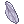 Giant Fly Wing | A box contains 1 Infinite Giant Fly Wing with a 1 hour duration.
Rental Items
| ||
| Infinite G. Fly Wing | 600 | Giant Fly Wing | A box contains 1 Infinite Giant Fly Wing with a 2 hour duration.
Rental Items
| ||
 All In One Ring All In One Ring
|
3,000 | All In One Ring | A box that contains:
Rental Item
| ||

|
 Refined Excalibur Refined Excalibur
|
3,000 |  Excalibur Excalibur
|
A box containing 1 Refined Excalibur.
Rental period for 7 days. Once this item is purchased, termination of contract is impossible. Also, this item is not refundable. Rental Item
| |
Limited Time
Seasonal February - March
| Seasonal February - March | ||||
|---|---|---|---|---|
| Image | Name | Price | Availability | Description |
| 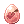 Valentine's Day Pack | 5,000 | February - March |
A box containing one of several Valentine's Day themed hats. Send hearts fluttering and release the inner heart-breaker in you.
| |
 Sweetheart Pack Sweetheart Pack
|
2,500 | February - March |
A sweet box containing one of the following Costume headgears. Contains one of the following items at random:
| |
 Lusty Pet Egg Lusty Pet Egg
|
2,500 | February - March |
A passionate looking egg that contains one of the following Pet Eggs. Each opened pack will also include 5 | |
| Lusty Hat Egg | 2,500 | February - March |
This is a red-hot hat box that contains one of the following Costumes. Each opened pack will also include 5 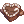 Hand-made Chocolate.
| |
| Cupid Set Box | 15,000 | February - March |
Contains 3 cupid items to get you ready to fire love's arrow this Valentine's Day. Contains ALL of the following Costumes:
| |
| Cupid Circlet | 5,000 | February - March |
Do you want yo play Cupid? Dress the part with this magnificent double-winged circlet! | |
| Cupid Scarf | 5,000 | February - March |
The bonus wing attached to this scarf will aid you on your flights. | |
| Cupid Wings | 7,500 | February - March |
This simple pair of wings will keep you floating in air for prolonged periods of time. Perfect for little chubby cherubs and bigger arrow shooters! | |
| Love Aura | 7,500 | February - March |
An aura of love so strong you can barely see where you're going.
| |
| Cat Backpack Pair | 12,000 | February - March |
| |
| Blue Cat Backpack | 7,500 | February - March |
A spacious backpack with comfortable straps. Warm snuggles make this shy cat blush adorably. | |
| Pink Cat Backpack | 7,500 | February - March |
A spacious backpack with comfortable straps. Warm snuggles make this shy cat blush adorably. | |


Seasonal March - June


Seasonal June - September
| Seasonal June - September | ||||
|---|---|---|---|---|
| Image | Name | Price | Availability | Description |
 Splish Splash Pet Egg Splish Splash Pet Egg
|
2,500 | June - September |
An adorable egg that contains one of the following Pet Eggs. Each opened pack will also include 5 | |
| Summer Egg II | 2,500 | June - September |
A Refreshing egg containing one of the following Costume headgears. Contains one of the following items at random:
| |

|
Summer Egg | 6,000 | June - September |
An egg containing a variety of summer themed hats. Contains one of the following Costume headgears:
|
| Summer Crate | 5,000 | June - September |
A crate that contains one random summer themed headgear. Contains one of the following Costume headgears:
| |
| Blue Ornate Scarf | 6,500 | June - September |
A blue, adorned scarf fit for heroes.
| |
| Summer Festival Egg | 2,500 | June - September |
A ceremoniously dressed egg containing one of the following Costume headgears. Contains one of the following items at random:
| |


Seasonal August - October
| Seasonal August - October | ||||
|---|---|---|---|---|
| Image | Name | Price | Availability | Description |
| End of Summer Egg | 2,500 | August - October |
An egg containing a variety of end of summer themed hats. Contains one of the following items at random:
| |
 Cosmic Set Egg Cosmic Set Egg
|
17,500 | August - October |
An egg from the edges of the universe. It may take a while to crack, but upon doing so will contain all of the following items.
| |
| Cosmic Ribbon | 7,500 | August - October |
A ribbon that comes combined with tail, reminiscent of that belonging to a Wild Rose. Shipped with a 9-life warranty. | |
| Cosmic Veil | 5,000 | August - October |
A veil of cosmic revelation. It belonged to a fabled cat prophet, who was able to accurately predict catnip locations across the known universe since time immemorial. | |

|
 Cosmic Aura Cosmic Aura
|
5,000 | August - October |
An ingenious aura of the cosmos, featuring miniature stars and a waning crescent. Known to captivate catstronauts and evoke sleepiness in everyone else. |
 Cosmic Scarf Cosmic Scarf
|
5,000 | August - October |
A glittery scarf vith a view to a distant galaxy. As its length is freely adjustable, when pulled, it stretches to infinity and beyond. | |
| Inari Tail | 7,500 | August - October |
A white fluffy tail made to mimic that of a great celestial fox. | |
| Inari Ears | 5,000 | August - October |
Fluffy white celestial fox ears. | |
| Inari Mask | 5,000 | August - October |
A mask worn by those who worship the great celestial fox. | |

|
 Ifrit Aura Ifrit Aura
|
7,500 | August - October |
An overpowering aura that exudes the essence of the great ifrit. Can be previewed with the Hat Effect Genie on the 3rd floor of the main office. Can be enchanted onto a garment with the Hat Effect Genie on the 3rd floor of the main office. |


Seasonal October - November
| Seasonal October - November | ||||
|---|---|---|---|---|
| Image | Name | Price | Availability | Description
|
 Vampire Set Box Vampire Set Box
|
17,500 | October - November |
A delightfully victorian set for those with the sharpest of fangs. Contains all of the following items.
| |
| Vampire Coffin | 7,500 | October - November |
A portable resting place with a soft velvet lining and smell of old blood. Folds out into a bigger, comfier coffin.
| |
| Vampire Collar | 5,000 | October - November |
A collar with a deathly flair that is older than it looks. Fastens all by itself on most non-artificial surfaces.
| |
 Vampire Sidehat Vampire Sidehat
|
5,000 | October - November |
A deep blood-red hat. Once upon an eternity worn by a creature who fed on the vital essence of the living.
| |
 Vampire Bats [M] Vampire Bats [M]
|
5,000 | October - November |
You can't escape the intense gaze. These flapping beauties are waiting for bloooooooooooooood.
| |
| Pumpkin Set Box | 13,000 | October - November |
A box containing three insidious halloween items.
| |
 Pumpkin Backpack Pumpkin Backpack
|
7,500 | October - November |
The only backpack you need to face the Trick or Treating season. Little fiends are included for free.
| |
| Pumpkin Cap | 5,000 | October - November |
A starry hat worn sideways. Its decorative, orange ribbon is held in place by a pumpkin brooch.
| |
| Pumpkin In Mouth | 5,000 | October - November |
A small, carefully carved autumn pumpkin, harvested from a patch in Niflheim.
| |
 Ghastly Pet Egg Ghastly Pet Egg
|
5,000 | October - November |
Contains a random Halloween themed pet from the following list:
| |
 Ghastly Pet Egg II Ghastly Pet Egg II
|
2,500 | October - November |
A spoopy looking egg that contains one of the following halloween themed Pet Eggs. Each opened pack will also include 5 | |
 Harrowing Egg Harrowing Egg
|
2,500 | October - November |
A Harrowing egg containing an abundance of spooky costumes!
| |
 Frightful Pet Egg Frightful Pet Egg
|
2,500 | October - November |
An egg concealing a frightful pet. Obtain one of the following Pet Eggs upon opening. Each pack also includes 5 | |
 Dastardly Pet Egg Dastardly Pet Egg
|
2,500 | October - November |
An egg concealing a pet. Much less intimidating that it looks. Obtain one of the following Each opened pack will also include 5 | |
 Halloween Egg Halloween Egg
|
7,500 | October - November |
A box containing one of many spooky hats.
| |
 Halloween Egg II Halloween Egg II
|
8,500 | October - November |
A box containing either one of many spooky hats, or an adorable cat pet.
| |
 Costume Party Egg Costume Party Egg
|
2,500 | October - November |
A pumpkin egg containing a variety of Halloween themed hats. Contains one of the following items at random:
| |
 Otherworldly Egg Otherworldly Egg
|
2,500 | October - November |
Just one look at this egg will reveal all sorts of spooky otherworldliness. Contains one of the following items at random:
| |
| Purple Ornate Scarf | 6,500 | October - November |
A purple adorned scarf fit for royalty.
Class: Costume
| |
| Abysmal Ornate Scarf | 6,500 | October - November | A black adorned scarf fit for villians.
Class: Costume
| |


Seasonal December - January + December - March
| Seasonal December - January | ||||
|---|---|---|---|---|

|
 Holiday Egg Holiday Egg
|
8,500 | December - January |
An egg containing one of the following Holiday hats:
|

|
Holiday Hat Box | 3,500 | December - January |
A box containing a random delightful holiday headgear from the following list.
|
 Celestial Christmas Egg Celestial Christmas Egg
|
8,500 | December - January |
An egg filled with the spirit of harmony and Christmas cheer. Contains one of the following Costume headgears:
| |
 Festive Wreath Festive Wreath
|
7,500 | December - January |
A brightly decorated wreath made from an assortment of evergreen twigs. This arrangement straps tightly to your back with a holly ribbon.
| |
| Noel Set Box | 15,000 | December - January |
A box containing three cozy yuletide items. Contains ALL of the following Costumes:
| |
| Jolly Gift Box | 2,500 | December - January |
A jolly box containing one of the following Costume Headgears.
| |


| Seasonal December - March | ||||
|---|---|---|---|---|
| White Ornate Scarf | 6,500 | December - March |
A white adorned scarf fit for heroes.
Class: Costume
| |
| Frosty Pet Pack | 2,500 | December - March |
A round penguin surprise containing one of the following wintery Pet Eggs. Each opened pack will also include 5 | |


Function
| Function | |||
|---|---|---|---|
| Image | Name | Price | Description |

|
 Omni Clothing Dye Omni Clothing Dye
|
2,500 | This ticket gives you access to the exclusive dyes from the Stylist in Prontera.
|
| Utility Belt Ticket | 3,000 | A ticket that will give you access to the Utility Belt Skill. This skill lets you store and use the following items on the go.
Can be redeemed with Betty on the bottom floor of the Main Office.
| |

|
Inventory Expansion Coupon | 750 | A nifty little coupon that enables you to carry +10 more individual items. A maximum of 8 coupons can be applied on a single character. (Current Max Inventory size is 200)
To use, click on the blue 'Inventory Expansion' button in the lower left corner of your inventory window. Only affects the character it was used on. |
| Pet Costume Ticket | 2,000 | This ticket allows you to costume your pet with the Pet Groomer (Heidi).
Consumed on use. | |
| Character Slot Voucher | 7,500 | A voucher that increases your maximum character slots by 10.
Can only be used once per account. | |

|
Nova Point Voucher | 1,000 | A valuable-looking voucher that is made out of chewy material. You will receive 1,000 Nova Points upon consuming it. |
| Premium Storage Voucher | 5,000 | This ticket allows you to unlock a premium storage with 850 slots. Trade this voucher with the storage NPC.
You may unlock up to 3 Premium Storages | |

|
Currency Wallet Voucher | 1,500 | This ticket allows you to unlock the currency wallet storage which will allow you to store various currencies.
Unlocking this Wallet also gives the user access to the Currency Wallet skill which will allow you to open your wallet from anywhere without the use of Kafra Cards. |
| Card Storage Voucher | 2,500 | This ticket allows you to unlock the Card Storage which allows you to store your cards and card albums. | |

|
Homuncubank Ticket | 5,000 | This ticket allows you to unlock one slot for the HomuncuBank, located on the second floor of Main Office (main_office 182 101).
You'll need to be an Alchemist, Creator or Genetic with the Call Homunculus skill to use the service. Consumed on use. |
| Name Change Coupon | 5,000 | Use this item to change your character's name on the Character Select Menu. Only the character who used the item may name change. No other character on the account. | |

|
 Gender Change Coupon Gender Change Coupon
|
7,500 | Use this item to change your character's gender.
Cannot be used by Ninja or Performer classes. |
 Alternate Outfit Alternate Outfit
|
5,000 | This voucher allows you to unlock one Alternate Outfit from the Stylist. Consumed on use. | |
 Enriched Elunium Enriched Elunium
|
1,000 | Concentrated Elunium that has been buried deep underground. Used as a material to strengthen armor. Enhances a chance of successful upgrade. | |

|
 E. Elunium (10) E. Elunium (10)
|
8,500 | A box containing 10 Enriched Eluniums.
[Enriched Elunium]
|
 Enriched Oridecon Enriched Oridecon
|
1,000 | Dense Oridecon that has been buried deep underground. Used as a material to strengthen weapons. Enhances a chance of successful upgrade. | |

|
 E. Oridecon (10) E. Oridecon (10)
|
8,500 | A box containing 10 Enriched Oridecons.
[Enriched Oridecon]
|
 HD Carnium HD Carnium
|
500 | A high density Carnium used in upgrading armor. Take this to Mighty Hammer in Eden Group or Payon next to the Kafra Shop Ladies to help you upgrade armor at +10 and higher.
| |
| HD Carnium (10) | 4,000 | A box which contains 10 HD Carniums.
[HD Carnium]
| |
 HD Bradium HD Bradium
|
500 | A high density Bradium used in upgrading weapons. Take this to Mighty Hammer in Eden Group or Payon next to the Kafra Shop Ladies to help you upgrade weapons at +10 and higher.
| |
| HD Bradium (10) | 4,000 | A box which contains 10 HD Bradiums.
[HD Bradium]
| |
 Spiritual Auger Spiritual Auger
|
6,500 | Socket Enchantment at 100% Success Rate.
| |

|
 Deluxe Pet Incubator Box Deluxe Pet Incubator Box
|
3,000 | Contains one Account Bound Deluxe Pet Incubator which is not consumed on use. |
 Halter Lead Halter Lead
|
5,000 | A mysterious halter that summon creature to ride on. | |
 Kafra Card Kafra Card
|
300 | A Kafra name card issued by the Kafra Headquarters. Using this card will call up the Kafra Service. | |

|
 Kafra Card (10) Kafra Card (10)
|
2,400 | A box containing 10 Kafra Cards.
[Kafra Card]
|
| Gym Pass | 650 | A Gym Pass that can be given to a special NPC to learn a skill that will increase your Maximum Weight Capacity by 200 for each skill level. This special skill can only be learned up to Level 10.
Ripped Cabus | |
 Gym Pass Box Gym Pass Box
|
5,000 | A box containing 10 Gym Passes.
[Gym Pass]
Ripped Cabus | |
 Token of Siegfried Token of Siegfried
|
200 | A certificate imbued with the power of the invulnerable Siegfried which allows its bearer to overcome death. Revives the dead character. | |

|
 Token of Siegfried (10) Token of Siegfried (10)
|
1,600 | A box containing 10 Tokens of Siegfried.
[Token of Siegfried]
|

|
Silvervine Fruit | 100 | Sunkissed Silvervine Fruit. Humans think that it is normal and tastes bad but it is valuable in Malangdo. Use these as currency to exchange for access to memorial dungeons and to exchange for enchanting A-E grade coins with the Special Vending Machine and Coin Exchanger in Malangdo. |

|
 Silvervine (10) Silvervine (10)
|
850 | Box containing 10 Silvervine Fruits. A small amount of canned food is included as a bonus. |